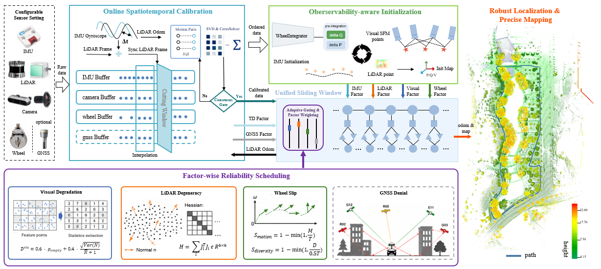

Overview of Ultra-Fusion. The framework unifies heterogeneous sensors in a timestamp-ordered estimator, supports deployment on ground, aerial, legged, and vehicle platforms, and improves localization robustness under sensor degradation, spatiotemporal uncertainty, and long-term or high-speed operation.
TL;DR
Ultra-Fusion is a resilient tightly-coupled multi-sensor fusion SLAM framework for intelligent transportation systems. A Unified Sliding-Window Estimator orders asynchronous measurements by timestamp and supports WIO, VIO, LIO, and LVIO with optional wheel and/or GNSS augmentation. Observability-Aware Initialization, Factor-Wise Reliability Scheduling, and Online Spatiotemporal Calibration improve robustness under sensor degradation and calibration perturbation.
Pipeline

Mechanism. Ultra-Fusion first converts asynchronous sensor streams into timestamp-ordered factors, then decides which factors are observable, reliable, and calibration-safe enough to enter the same sliding-window optimization. The page evidence below follows this logic: if the scheduler and calibration modules work, difficult trajectories should remain closed, stable, and transferable.